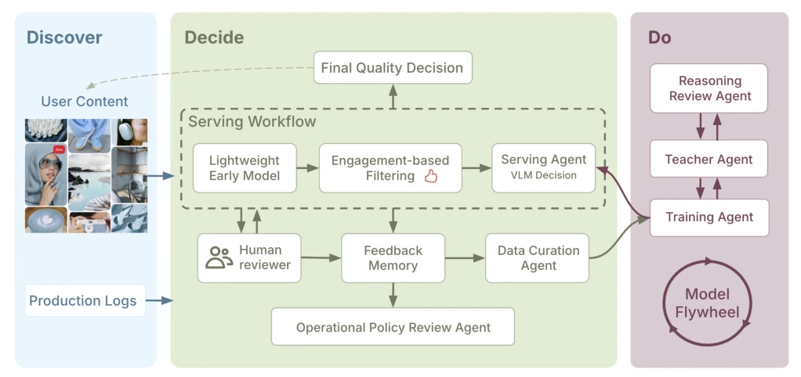

← 返回← Back
PinSieve: Production Selective VLM Serving and a Governed Memory Flywheel for Enterprise Content-Quality Triage
Chuqing Gao, Yuanfang Song, Jonathan Zhang, Yifan Wu, Vishwakarma Singh, Qinglong Zeng
abspdf
论文点评Review
这篇论文把 VLM 塞进企业级内容审核流水线，搞了个“选择性服务”的套路。说白了就是别全量跑大模型，只挑那些轻量模型搞不定的“灰色地带”用 VLM 救场。效果确实猛，自动通过率翻倍，成本降了 16%，信号交付从隔天变当天。但吐槽点也很明显：这本质上是个工程优化案例，而非算法创新。所谓的“智能体”更多是流程编排，离真正的自主决策差得远，甚至有点“为了智能体而智能体”的味道。而且离线回放的效果提升（FNR 降低）和线上实际收益的归因要分清楚，别把离线优化当线上功劳。对于工业界来说，这套“飞轮”机制倒是挺实用，特别是那个 Feedback Memory 记录路由路径和审计倾向，解决了选择性反馈带来的偏差问题。但学术价值嘛，也就那样，属于“在正确的时间把正确的模型用在正确的地方”。对于学术界来说，这种“bounded automation”可能比那些吹嘘全自主的 agent 更接地气，但也暴露了当前 VLM 在工业界落地时，算力成本依然是最大瓶颈，只能搞“精兵简政”。
—
研究动机Motivation
企业 AI 代理在生产环境中往往需要受限、有状态、可观测且可治理，而非完全自主。现有工作要么追求全自主 Agent 的推理和工具使用 [25, 27, 28]，要么关注工业界的有限自动化和人工介入 [7, 16, 19, 24]。PinSieve 属于后者，但现有方案存在瓶颈：轻量前端模型处理简单案例快但噪声大，依赖多模态证据的复杂案例往往被推迟到人工审核或延迟特征，导致平台面临“快但噪”或“强但慢”的权衡。特别是新鲜内容，次日信号错过了排名和干预的最佳窗口。通用 VLM 服务成本太高且操作粗糙，无法直接替换整个流水线。此外，选择性反馈会导致观察偏差，盲目重训可能放大盲区。Active Learning 和 Continual Learning 研究过信息性查询和重训 [2, 3, 6, 8, 12, 17, 20, 22, 30, 31]，但 PinSieve 的关键区别在于选择性可观测性：标签不是通过自由查询未标记池获得，而是部署后通过升级和有限审计揭示。因此，需要一种受控的维护生命周期，而非简单的模型更新。
—
方法Method
整体架构分为在线和离线，形成受控的企业智能体生命周期。在线只有 Serving Agent，接收灰区流量，输出标量路由分数，低于阈值自动通过，高于阈值人工介入。离线包括 Teacher Agent 生成 rationale 监督，Reasoning Review Agent 审计 rationale，Feedback Memory 记录路由轨迹和审计元数据，Data Curation Agent 构建重训批次，Training Agent 训练候选模型。创新点在于：1. 选择性服务，只在灰区用 VLM，暴露标量接口而非完整推理，便于监控和回滚。2. 受控记忆飞轮，Feedback Memory 记录观察路径和审计倾向，支持逆倾向加权评估，解决选择性反馈偏差。3. 数据策展，混合代表性、不确定性和近期样本，受 guardrails 约束，防止分布漂移。4. 理性审查，Reasoning Review Agent 对教师生成的 rationale 进行 keep/repair/drop 决策，防止监督噪声放大。5. 训练配方，结合序列目标、决策 token 分类和可选分离项，优化 score gap。整个流程强调 bounded automation，离线代理不能直接改变在线系统，需通过评估门控。Feedback Memory 存储版本化服务轨迹、标签、审计元数据和重训元数据，确保重训、评估、调试和发布基于系统实际观察到的内容。Data Curation Agent 在刷新步骤观察累积记忆，提出重训计划，仅当批次满足部署约束（如正率偏差和 JS 散度）时才接受。Training Agent 微调候选模型，通过影子测试和固定安全门控后发布。
—

Figure 1: PinSieve System Architecture实验Experiments
数据集是 6 个月生产数据，一个代表性内容质量信号，包含图像和文本上下文。基线是之前的生产模块和随机重训。指标包括 FNR@50%, Auto-pass rate, 成本，延迟。结果：PinSieve 自动通过率从 20.48% 升到 41.99%，成本降 16.2%，延迟变当天。离线重训中，DC-Replay 比随机重训 FNR@50% 从 17.73% 降到 13.29%。消融显示 KD+composite loss+rationale 最好。DPO 效果不明显。静态训练消融表明，仅微调就能大幅提升自动通过率，知识蒸馏和理性条件响应进一步优化。重训压力测试显示，模型错误重训在 selective feedback 下不稳定，而代表性随机重训是强基线。理性审查抽样显示 92.2% 忠实，7.8% 低忠实，部分可修复。操作审查模块将失败归因为校准误差、感知误差或策略模糊。生产结果仅支持直接在线影响声明，离线重训和治理结果作为离线或采样治理证据报告。
—